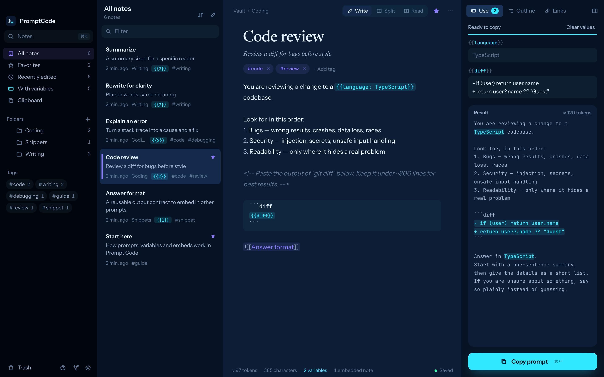
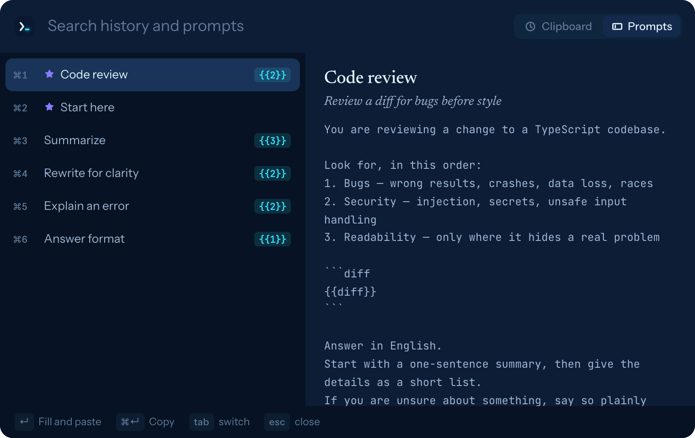

Prompt Code for macOS
提示词写一次，
随处都能用。
一款面向 AI 提示词的 Markdown 编辑器和代码片段管理器。支持填写变量、可复用的片段，以及在任意应用中都能唤出的快速粘贴窗口。你的提示词始终是 Mac 上的普通 .md 文件。

01 / 提示词语法
提示词是模板，
不必每次重新输入。
在 Markdown 上加三点小扩展，笔记就变成可以填写、复制的模板。其余部分都是普通的 Markdown。
用{{tone: friendly | formal}}的语气 向{{audience: engineers}} 解释{{topic}}。
变量
可以是普通字段、带默认值的字段，或一组选项。“使用”面板会把它们变成输入框，并在你输入时实时显示最终的提示词。按 ⌘↵ 即可复制。
请审查这个拉取请求。
![[回答格式]]
嵌入
把角色设定或输出格式要求放在一篇笔记里，然后嵌入到任意提示词中。复制时会自动展开。
总结这次会议。
<!-- 先给出会议记录
效果更好 -->
给自己的备注
HTML 注释会保留在文件中，复制时会被移除，模型永远看不到它们。
02 / 快速粘贴
无论在哪个应用里输入，
提示词都在手边。
在任意位置按下 ⌥⌘V，会弹出一个小窗口，显示剪贴板历史和你的提示词。选中一项，它就会被粘贴到你正在输入的地方。
- 先填写再粘贴。含有变量的提示词可以直接在窗口里填入值，然后再粘贴。
- 菜单栏中的剪贴板历史。保留最近 200 条复制内容。密码管理器标记为隐藏的内容永远不会被记录。
- 全程键盘操作。↵ 粘贴，⌘↵ 仅复制，⌘1–⌘9 粘贴对应的行。

03 / 功能
兼具笔记应用
和片段管理器的长处。
写作时有链接、反向链接、关系图和命令面板；复用时有文件夹、标签、收藏和一键复制。
链接与标签
支持自动补全的 [[笔记]] 链接、反向链接、#标签 和关系图视图。重命名笔记时，指向它的链接会自动更新。
快速跳转
⌘K 跳转到任意笔记，输入 > 执行命令，⇧⌘F 搜索所有笔记的正文。
文件保持原样
笔记库就是一个存放带 YAML frontmatter 的 .md 文件的文件夹。用任何应用编辑，改动都会实时显示。
编写与阅读
代码块带语法高亮的 Markdown 编辑器，按 ⌘E 可切换到阅读视图。
数据不离开你的 Mac
无需账号，没有遥测，不发出任何网络请求。删除的笔记会移到笔记库内的 .trash/。
小巧且原生
磁盘占用约 12 MB。基于系统 WebKit，使用 Tauri 构建。支持浅色和深色主题、五种强调色。应用界面支持英语和日语。
04 / 快捷键
手指不离键盘。
| ⌥⌘V（任意位置） | 快速粘贴（可在设置中修改） |
| ⌘K | 跳转到笔记，输入 > 执行命令 |
| ⌘N / ⇧⌘N | 新建笔记 / 新建文件夹 |
| ⇧⌘F | 搜索所有笔记 |
| ⌘↵ | 填写变量；在面板中则为复制 |
| ⇧⌘C | 以当前值复制 |
| ⌘E | 在编写和阅读之间切换 |
| ⌘\ | 隐藏或显示侧边栏 |
| ⌘G | 关系图 |
| ⌘D | 复制笔记 |
| ⌘⌫ | 将笔记移到废纸篓（可在提示中撤销） |
| ⌘, | 设置 |
05 / 下载
获取 Prompt Code。
选择适合你 Mac 的 DMG，打开后把 Prompt Code 拖到“应用程序”文件夹。首次启动时会显示一份简短的指南。
- 使用 Developer ID 签名并经过 Apple 公证，打开时不会出现警告。需要 macOS 11 或更高版本。
- 要粘贴到其他应用，macOS 会请求你在“系统设置 › 隐私与安全性 › 辅助功能”中允许 Prompt Code。未授权时，快速粘贴仍会帮你复制文本，你可以用 ⌘V 自行粘贴。
- 关闭窗口后，Prompt Code 会留在菜单栏中。可从菜单栏菜单或按 ⌘Q 退出。
从源代码构建
git clone https://github.com/karamage/prompt-code.git cd prompt-code bun install bun run app:build # → src-tauri/target/release/bundle/macos/
06 / 常见问题
常见问题。
- 我的提示词保存在哪里？
- 保存在一个存放 Markdown 文件的文件夹中，默认是
~/PromptCode，也可以在设置中选择其他文件夹。你可以像对待其他文件夹一样备份、同步它，或用 git 管理。 - 它会把我的提示词发送到别处吗？
- 不会。Prompt Code 没有账号和遥测，也不发出任何网络请求。它的本地服务器只监听
127.0.0.1，并且需要启动时生成的令牌。 - 可以和 Obsidian 的笔记库一起用吗？
- 它读取带 YAML frontmatter 和
[[链接]]的普通.md文件，所以你可以在设置（⌘,）中把任何 Markdown 笔记文件夹选为笔记库。 - 支持哪些 AI 工具？
- 全部都支持。Prompt Code 复制或粘贴的是最终文本，因此无论是聊天应用、IDE、终端还是浏览器都能使用。
- 需要付费吗？
- 完全免费。它基于 MIT 许可证开源。